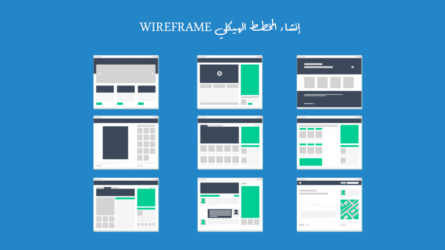

اسم الطالب: ندى عباس المنسي محمد على البحيري
رقم الجامعي: 2502826
عند التفكير في إنشاء أي منصة إلكترونية أو موقع ويب، يظن البعض أن الخطوة الأولى هي البدء فوراً في كتابة الأكواد البرمجية. لكن في الواقع، تمر المواقع الناجحة بمرحلة أساسية تسبق البرمجة، وهي مرحلة "التخطيط ورسم الهيكل البصري".
تعد هذه المرحلة بمثابة الخريطة أو المخطط الهندسي الذي يحدد مسار العمل؛ فمن خلالها يتم تنظيم صفحات المنصة وتخيل شكل الواجهات وتوزيع العناصر الأساسية. تكمن أهمية هذا التقرير في تسليط الضوء على دور التخطيط المسبق في توفير الوقت والجهد, وكيف يساهم في بناء مواقع مريحة وسهلة الاستخدام قبل الدخول في تفاصيل الأكواد المعقدة.
تتضمن عملية التخطيط للمواقع والمنصات الإلكترونية عدة جوانب أساسية تجعلها خطوة لا غنى عنها لأي مطور أو مصمم، ويمكن تلخيص الأفكار الرئيسية فيما يلي:
يساعد التخطيط على رؤية الصورة الكاملة للموقع قبل بنائه. فنقوم بتحديد أين سيوضع شعار الموقع، وأين ستكون قائمة التنقل الرئيسية، وكيف ستُعرض النصوص والصور في الصفحة لضمان عدم تشتت الزائر.
تعديل التصميم أو نقل مكان زر معين أثناء مرحلة الرسم والتخطيط يستغرق ثوانٍ معدودة. بينما تعديل نفس العناصر بعد كتابة أكواد الـ HTML قد يتطلب إعادة كتابة أسطر برمجية كثيرة وتغيير في هيكل الموقع و CSS، مما يضيع الكثير من الوقت.
يعتمد المطورون على برامج متخصصة لعمل هذه المخططات البصرية، ومن أبرز هذه الأدوات المجانية أداة Draw.io لعمل الـ Wireframes. هذه الأداة تتيح رسم مربعات وخطوط وأزرار تمثل الصفحات بشكل مبسط، مما يسهل ترتيب الأفكار وتوزيع العناصر برؤية واضحة قبل كتابة الكود.
| طريقة العمل | السرعة في التعديل | تنظيم الأفكار |
|---|---|---|
| العمل باستخدام مخطط مسبق | سريع جداً ولا يستغرق ثوانٍ | الأفكار واضحة ومحددة بالكامل |
| البدء في البرمجة مباشرة | بطيء جداً ويتطلب تعديل أكواد كثيرة | تشتت وعشوائية في توزيع العناصر |
لنتخيل أننا نريد بناء منصة تعليمية لشرح الدروس للطلاب. إذا بدأنا البرمجة مباشرة بدون تخطيط، قد نكتشف بعد إنهاء الموقع أن زر "تحميل المحاضرة" يظهر في أسفل الصفحة بشكل غير واضح، مما يصعب الأمر على الطالب.
أما عند استخدام التخطيط المسبق عبر Draw.io، سنقوم برسم مربع يمثل جدول المحاضرات ونضع بجانبه زر التحميل مباشرة في أعلى الصفحة، مما يضمن تجربة مستخدم سهلة وواضحة من البداية.

في الختام، يمكن القول إن رسم هيكل الموقع قبل برمجة أكواد الويب هو الأساس الذي يضمن نجاح أي منصة إلكترونية. التخطيط الذكي يمنع العشوائية، ويقصر المسافة بين الفكرة والتنفيذ، وهو السمة الأساسية للمطور المحترف الذي يهتم بجودة عمله وسهولة تصفح مستخدميه.